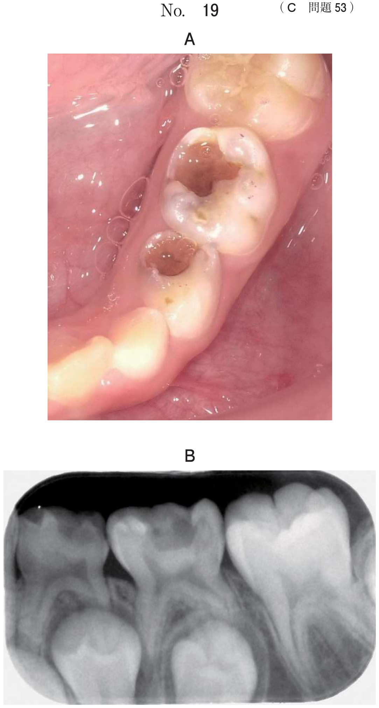

超選択的動注化学療法は、口腔癌などの腫瘍に対して、栄養動脈にカテーテルを挿入し、抗癌剤を直接注入する治療法。IVR（Interventional Radiology）の一種。
IVR（Interventional Radiology）とは、画像検査を施行しながらカテーテル操作や経皮的穿刺術を利用して行う治療。「画像下治療」ともよばれる。
動注化学療法では、カテーテルの位置確認にエックス線透視（血管造影）を使用する。
舌癌に対する動注化学療法を行う際の確認画像（別冊No.32）を別に示す。
撮像に用いられている放射線はどれか。1つ選べ。

【解説】動注化学療法の確認画像は血管造影（アンギオグラフィ）であり、エックス線透視を使用している。画像には血管が造影剤で白く描出されている。ガンマ線は核医学検査、重粒子線は放射線治療に使用。ベータ線やアルファ線は画像診断には使用しない。
口腔癌に対して、栄養動脈から抗癌剤を直接注入する治療。
腫瘍や血管奇形（動静脈奇形）の栄養血管を塞栓物質で閉塞させる治療。
CT画像をリアルタイムで見ながら、生検針を腫瘍に挿入して組織を採取する。
| 放射線 | 主な用途 |
|---|---|
| エックス線 | 画像診断（透視、CT）、IVR |
| ガンマ線 | 核医学検査（シンチグラフィ、SPECT） |
| 重粒子線 | 放射線治療（粒子線治療） |
| ベータ線 | 放射線治療（内用療法） |
| アルファ線 | 放射線治療（内用療法） |